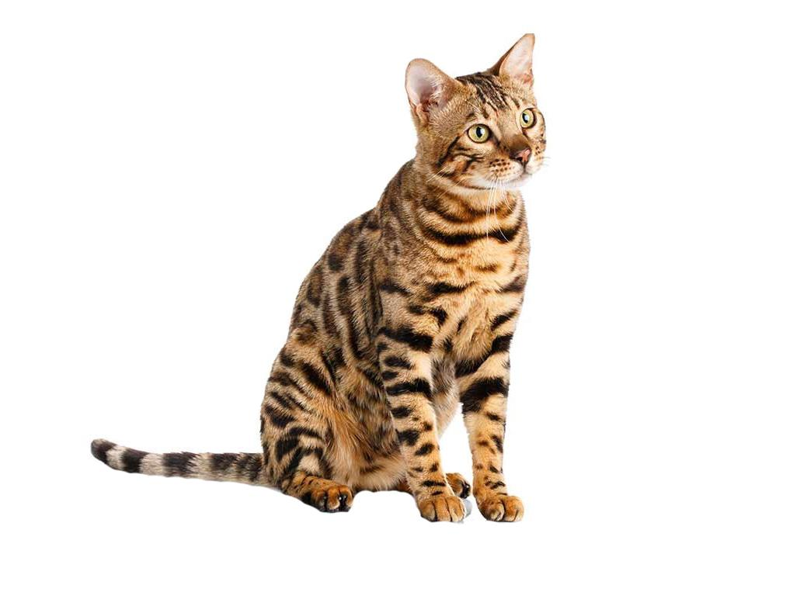

Son originarios de Estados Unidos, el fruto de cruces entre diversas razas de gatos domésticos con el serval (Leptailurus serval) gatos salvajes oriundos de África, que destacan por sus grandes orejas. Estas raíces han levantado una gran polémica desde que se dio a conocer que se estaban realizando esas hibridaciones, pues hay quien considera que con ellas se incumplen diversos principios y premisas éticas en cuanto a la cría de felinos. El nombre de este felino es un tributo al hábitat de este felino salvaje, que es uno de los animales africanos de la sabana. Los primeros cruces se realizaron en la década de los 80
De un tamaño considerable, los ejemplares de gato de la raza savannah destacan como una de las razas de gatos gigantes. Si bien suele pesar entre 6 y 10 kilogramos, un individuo batió el récord de 23 kilogramos. Alcanzan entre 50 y 60 cm. a la cruz, aunque puede ser mayor. Además, esta raza felina presenta dimorfismo sexual, pues generalmente las hembras son más pequeñas que los machos. Normalmente el tamaño y envergadura de esos ejemplares mencionados se da debido a que en ellos hay más presencia genética de sus ancestros salvajes que en aquellos otros ejemplares de dimensiones más reducidas. Algunos ejemplares tienen una esperanza de vida de 20 años, aunque lo normal es que vivan hasta los 10 y los 15. El cuerpo de un savannah es estilizado y fibroso. Las extremidades son alargadas, ágiles y esbeltas, teniendo en conjunto un porte muy elegante. La cola es fina y su longitud es destacable. La cabeza es mediana, con una nariz ancha y poco pronunciada. Las orejas que constituyen su sello distintivo, estas son grandes y acabadas en punta, son de inserción alta. Los ojos son almendrados, de un tamaño mediano y suelen presentar tonalidades grisáceas, pardas o verdosas. El pelaje es corto y tupido, de tacto suave y aterciopelado, pero no por ello deja de ser duro y resistente.

Se trata de animales domésticos afectuosos y sociables. Generan un vínculo de apego afectivo con sus tutores y, correctamente socializados desde cachorros, estos gatos pueden convivir de maravilla con niños y otros animales. Además, son muchos los que intentan enseñar a estos felinos algún truco u orden de obediencia, pues son extremadamente inteligentes. Hablamos también de un gato muy activo, por lo que debemos proporcionarle diariamente sesiones de juego, incluyendo especialmente aquellas actividades que les ayuden a desarrollar la secuencia de caza, tan importante para la especie. La estimulación mental, mediante juguetes que les ayuden a hacerles pensar, o el enriquecimiento del hogar serán también pilares importantes para el bienestar del savannah, un gato incansable.

Estos gatos tienen una particularidad y es que adoran bañarse y jugar con el agua, especialmente si estimulamos esta conducta desde que son cachorros, utilizando el refuerzo positivo. Así, pueden llegar a meterse en la ducha, jugar con el agua del grifo o con la manguera del jardín. Si decidimos bañar a nuestro gato utilizaremos siempre productos específicos para felinos, nunca champú de uso humano. Debemos cepillar su pelaje con frecuencia para eliminar el pelo sobrante y la suciedad que haya podido acumularse. Para que su pelo luzca brillante podemos darles aportes de ácidos grasos como el omega 3, ya sea con complementos nutricionales como por medio de la dieta, por ejemplo dándole salmón u otros pescados azules, también encontraremos piensos comerciales que aportan estos ácidos grasos. Para mantener sanos y limpios sus ojos se recomienda limpiarlos con regularidad usando una gasa y o bien un limpiador oftalmológico o bien la conocida infusión de manzanilla amarga que usaban ya nuestras abuelas como remedio para afecciones oculares, así evitaremos la conjuntivitis y otras molestias oculares. También atenderemos la limpieza auditiva por medio de limpiadores óticos específicamente diseñados para ello.

Al ser una raza especialmente reciente, no tienen enfermedades hereditarias conocidas. Aún así, será conveniente realizar visitas veterinarias periódicas cada 6 o 12 meses.